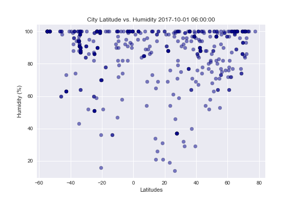

Visualizations


The purpose of this project is to analyze weather changes as you get closer to the equator.
First, 500 coordinates (latitudes and longtitudes) were randomly generated. Using citipy, we located the cities closest to the 500 random coordinates. Next, ustilizing the OpenWeatherMap API to assemble a dataset of the available information corresponding each of the 500 cities. For this project, we focused on the temperature, cloudiness, wind speed and humidity of each city. After creating a dataset, we created various plots of latitude vs. the weather factors mentioned with Matplotlib.
This site provides the source data and the visualizations created for analysis and the descriptions of trends that were observed throughout the course of our analysis.